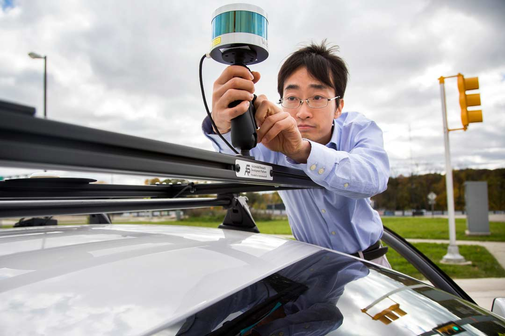

Tech and Testing
It’s not just about making things; it’s about making things better - or faster, easier, less expensive. That’s what happens when you concentrate talent and creativity around the right resources.
Video: Connected, Autonomous cars | A Driverless future https://youtu.be/GRZvIyZEcvM
Mcity, a public-private partnership headquartered in the U-M Office of Research and by now a household name among Michigan Engineers – has become a hub at the university. It counts among its major investors Aptiv, Denso, Econolite, Ford, GM, Honda, Intel, LG, StateFarm, Toyota and Verizon.
Lidar on a Budget
Toyota Research Institute - Ann Arbor
Lidar units, which work with cameras and radar to pinpoint an autonomous vehicle’s location, can cost up to $70,000, and can wear out quickly. So researchers at the Toyota Research Institute - Ann Arbor adapted video game technology to turn pre-recorded maps into 3D visualizations that accomplish the same goal, but do it using inexpensive cameras.
Deep Learning Hack
U-M/Ford Center for Autonomous Vehicles, Ann Arbor
 The deep learning datasets that train autonomous systems are typically annotated by humans before they’re fed to a computer - a slow and painstaking process. A team at U-M/Ford Center for Autonomous Vehicles discovered that Grand Theft Auto looks enough like the real world to train a system. They were able to develop automated image annotation algorithms and then, overnight, extract and mark up ten million scenes, which they used to improve the accuracy of their system.
The deep learning datasets that train autonomous systems are typically annotated by humans before they’re fed to a computer - a slow and painstaking process. A team at U-M/Ford Center for Autonomous Vehicles discovered that Grand Theft Auto looks enough like the real world to train a system. They were able to develop automated image annotation algorithms and then, overnight, extract and mark up ten million scenes, which they used to improve the accuracy of their system.
Cars that Think
May Mobility, Ann Arbor
 Path planning has typically relied on loading a vehicle with lots and lots of data so it knows where to expect certain features - like trees and traffic signals. But U-M is also the birthplace of a radically different technique known as multi-policy decision making. In this approach, the vehicle doesn’t plan a path at all – it uses a library of driving strategies and runs a real-time “election” to pick the best one for a particular situation. The team at May Mobility, which operates a fleet of autonomous shuttles in Detroit, is pushing this technology to produce increasingly human-like behavior.
Path planning has typically relied on loading a vehicle with lots and lots of data so it knows where to expect certain features - like trees and traffic signals. But U-M is also the birthplace of a radically different technique known as multi-policy decision making. In this approach, the vehicle doesn’t plan a path at all – it uses a library of driving strategies and runs a real-time “election” to pick the best one for a particular situation. The team at May Mobility, which operates a fleet of autonomous shuttles in Detroit, is pushing this technology to produce increasingly human-like behavior.
Weather Dependent
Mcity, Ann Arbor
 Rain and snow can cloud driverless car perception systems just like they cloud your vision. So Ford Motor Company turned to the Mcity Test Facility to evaluate its algorithms in winter weather. That’s an example of the kind of work that’s possible in this first-of-its-kind proving ground. At the test facility, industry and faculty researchers can put their vehicles through potentially dangerous situations that self-driving cars must master before they can take the place of human drivers.
Rain and snow can cloud driverless car perception systems just like they cloud your vision. So Ford Motor Company turned to the Mcity Test Facility to evaluate its algorithms in winter weather. That’s an example of the kind of work that’s possible in this first-of-its-kind proving ground. At the test facility, industry and faculty researchers can put their vehicles through potentially dangerous situations that self-driving cars must master before they can take the place of human drivers.
From Prototype to Product
American Center for Mobility, Ypsilanti
 Technology that’s graduating from prototype to product can take the next steps at the American Center for Mobility at Willow Run in Ypsilanti. ACM’s 530-acre campus hosts a 2.5-mile, 80 mph highway loop, multi-decker bridges, tunnels and a full-scale boulevard designed with the Michigan Department of Transportation’s help.
Technology that’s graduating from prototype to product can take the next steps at the American Center for Mobility at Willow Run in Ypsilanti. ACM’s 530-acre campus hosts a 2.5-mile, 80 mph highway loop, multi-decker bridges, tunnels and a full-scale boulevard designed with the Michigan Department of Transportation’s help.
It is the real world,
said John Maddox, president and CEO. For the verification and validation aspects we’re focusing on, that’s what you need. If you want to operate your vehicle on a highway, you have to teach it on a highway. Otherwise, you haven’t taught it.
Road Ready
U.S. 23
 In June 2018 the state of Michigan opened the third lane of 13 miles of US 23 for connected and autonomous vehicles, and added $2 million in infrastructure for data collection.
In June 2018 the state of Michigan opened the third lane of 13 miles of US 23 for connected and autonomous vehicles, and added $2 million in infrastructure for data collection.